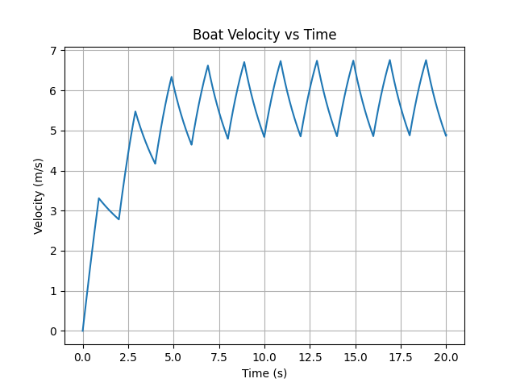

01 Computational mechanics
Energy transfer in rowing
A cycle-resolved model of thrust, drag, and boat velocity, with extensions for moving mass, pitch, and synthetic sensing.
Simulation and research prototypes. The startup energy fraction is not rowing or metabolic efficiency.
